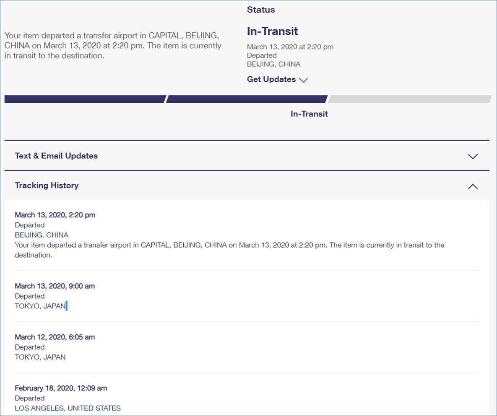

To Do Or Not To Do
One week later on February 18, 2020, my three boxes left Los Angeles. They arrived in China almost one month later, March 13, 2020.

On March 19, 2020, my two friends in Beijing got my boxes while my other friend outside Beijing received one week later March 24, 2020.
It took 43 days to send the face masks from US to China. When my boxes arrived, there was no shortage on face masks anymore in China.
However, there was a shortage on PPE in US because of the surging cases of COVID-19 in US. I have been asking myself over and over about whether I did the right thing or not.
Basically the face masks could save my friends’ life. I do not have the heart to refuse a person’s live or death request. I think I am still going to do it.
What would you do?
×